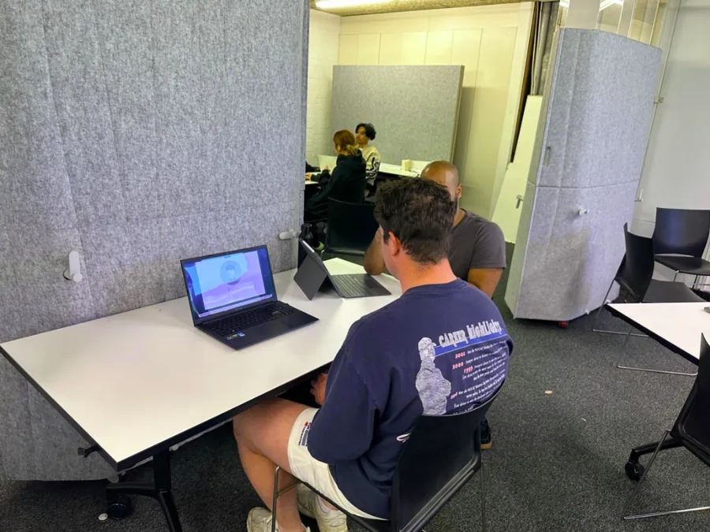
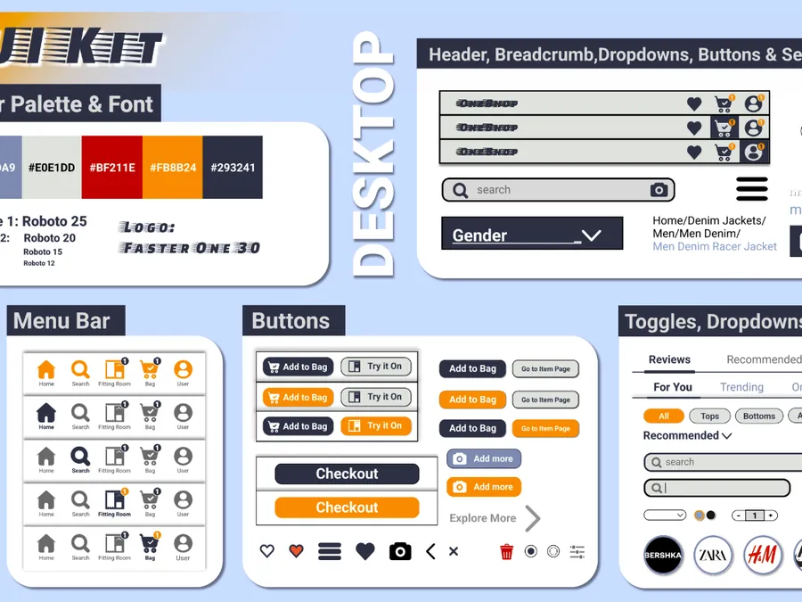

FRANK WU
UI/UX Designer




- User interviews & surveys
- Usability testing
- Personas & journeys
- Wireframes & prototypes
- Design systems
- High-fidelity UI
- HTML · CSS · JavaScript
- Responsive layouts
- Shipped on nitori-net.tw
Designed, built, and it sells.
NT$1.67MFather's Day campaign, in 17 days
1.19%Mid-Autumn conversion, everyday kitchenware


E-commerce pages for Nitori Taiwan's online store, from seasonal campaigns to product guides, designed and coded end to end.
Open the seriesA multi-sensory system that gets shoppers to return trolleys, through gamification and clear feedback.
View case studyA STEM learning platform built to engage students in rural and remote areas.
View case studyA shopping app with AI support, so people can buy clothes with confidence.
View case studyFrom the first interview to shipped code, every step is intentional.
Understand
Interviews, surveys and testing, so every decision rests on real evidence rather than assumptions.
Shape
Wireframes, prototypes and design systems that turn something complex into something effortless.
Build
I write the front end myself, so what ships behaves exactly the way it was designed.
Ship & refine
Launch, read the results, and carry what worked into the next page.